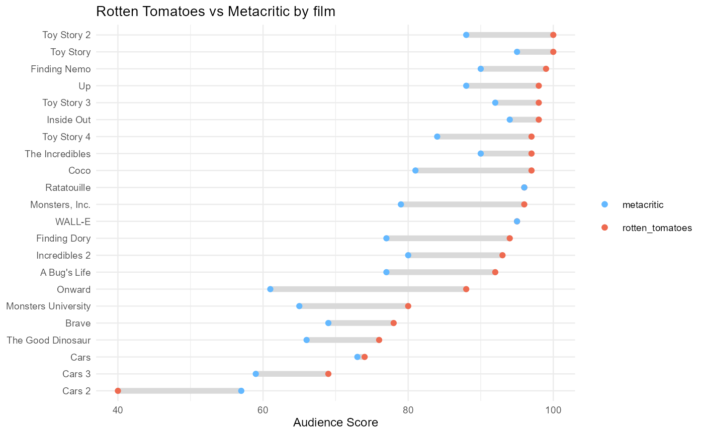

The data has box office sales, audience ratings, and release dates for each Pixar film
pixar_filmsA tibble with 22 rows and 10 columns:
order of release
name of film
date film premiered
the year the film premiered
film length in minutes
rating based on Motion Picture Association (MPA) film rating system
score from the American review-aggregation website Rotten Tomatoes; scored out of 100
score from Metacritic where scores are weighted average of reviews; scored out of 100
box office gross amount in U.S. dollars (millions) for U.S. and Canada
box office gross amount in U.S. dollars (millions) for other territories
pixar_films
#> # A tibble: 22 × 10
#> order film release_date year rating run_time rotten_tomatoes metacritic
#> <int> <chr> <date> <dbl> <chr> <dbl> <dbl> <dbl>
#> 1 1 Toy Story 1995-11-22 1995 G 81 100 95
#> 2 2 A Bug's … 1998-11-25 1998 G 95 92 77
#> 3 3 Toy Stor… 1999-11-24 1999 G 92 100 88
#> 4 4 Monsters… 2001-11-02 2001 G 92 96 79
#> 5 5 Finding … 2003-05-30 2003 G 100 99 90
#> 6 6 The Incr… 2004-11-05 2004 PG 115 97 90
#> 7 7 Cars 2006-06-09 2006 G 117 74 73
#> 8 8 Ratatoui… 2007-06-29 2007 G 111 96 96
#> 9 9 WALL-E 2008-06-27 2008 G 98 95 95
#> 10 10 Up 2009-05-29 2009 PG 96 98 88
#> # … with 12 more rows, and 2 more variables: bo_domestic <dbl>, bo_intl <dbl>
library(ggplot2)
ggplot(pixar_films, aes(bo_intl, rating)) +
geom_boxplot() +
xlim(0, NA) +
labs(title = "International Box Office by MPA Rating")
ggplot(pixar_films, aes(release_date, run_time)) +
geom_line() +
geom_point() +
ylim(0, NA) +
labs(title = "Film runtimes by release date")
ggplot(pixar_films, aes(y = reorder(film, rotten_tomatoes))) +
geom_linerange(aes(xmin = rotten_tomatoes, xmax = metacritic), size = 2, color = "grey85") +
geom_point(aes(x = rotten_tomatoes, color = "rotten_tomatoes")) +
geom_point(aes(x = metacritic, color = "metacritic")) +
scale_color_manual(values = c("steelblue1", "coral2")) +
theme_minimal(base_size = 9) +
labs(
title = "Rotten Tomatoes vs Metacritic by film",
color = NULL,
y = NULL,
x = "Audience Score"
)
